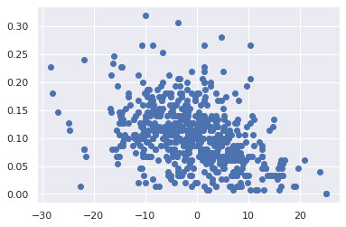
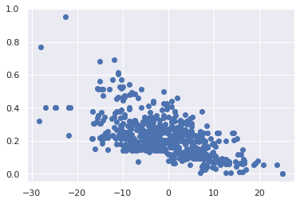
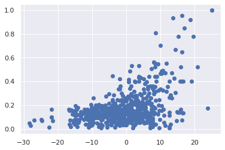
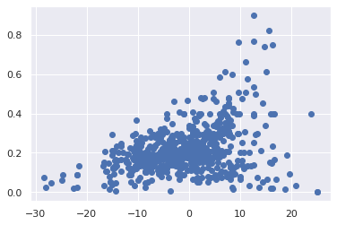
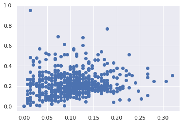

Cluster Analysis¶
import numpy as np
import pandas as pd
import statsmodels.api as sm
import matplotlib.pyplot as plt
import seaborn as sns
sns.set()
from sklearn.cluster import KMeans
df = pd.read_csv("./data/agg_all.csv", index_col=0)
df
| Total | A | B | C | D | Study | |
|---|---|---|---|---|---|---|
| 0 | 7.666667 | 0.080000 | 0.060000 | 0.020000 | 0.473333 | Fridberg |
| 1 | -4.500000 | 0.160000 | 0.173333 | 0.080000 | 0.220000 | Fridberg |
| 2 | -5.000000 | 0.080000 | 0.233333 | 0.066667 | 0.253333 | Fridberg |
| 3 | -3.500000 | 0.073333 | 0.226667 | 0.080000 | 0.253333 | Fridberg |
| 4 | 0.666667 | 0.066667 | 0.160000 | 0.100000 | 0.306667 | Fridberg |
| ... | ... | ... | ... | ... | ... | ... |
| 93 | 2.000000 | 0.160000 | 0.460000 | 0.086667 | 0.293333 | Wetzels |
| 94 | 14.333333 | 0.033333 | 0.206667 | 0.306667 | 0.453333 | Wetzels |
| 95 | 9.666667 | 0.120000 | 0.126667 | 0.246667 | 0.506667 | Wetzels |
| 96 | 8.000000 | 0.166667 | 0.200000 | 0.293333 | 0.340000 | Wetzels |
| 97 | -12.000000 | 0.073333 | 0.693333 | 0.040000 | 0.193333 | Wetzels |
617 rows × 6 columns
100 has most studies, 95 has 1 and 150 in between. if i do totals of each picked and amount won for each dataset and normalise the amount of number of trials and decks picked over total picks.
could also look at if its really after 50th trial they start to go one way or the other.
plt.scatter(df['Total'], df['A'])
# plt.xlim(-180,180)
# plt.ylim(-90,90)
plt.show()

plt.scatter(df['Total'], df['B'])
# plt.xlim(-180,180)
# plt.ylim(-90,90)
plt.show()

plt.scatter(df['Total'], df['C'])
# plt.xlim(-180,180)
# plt.ylim(-90,90)
plt.show()

plt.scatter(df['Total'], df['D'])
# plt.xlim(-180,180)
# plt.ylim(-90,90)
plt.show()

plt.scatter(df['A'], df['B'])
plt.show()

x = df.iloc[:,:2] # 1t for rows and second for columns
x
| Total | A | |
|---|---|---|
| 0 | 7.666667 | 0.080000 |
| 1 | -4.500000 | 0.160000 |
| 2 | -5.000000 | 0.080000 |
| 3 | -3.500000 | 0.073333 |
| 4 | 0.666667 | 0.066667 |
| ... | ... | ... |
| 93 | 2.000000 | 0.160000 |
| 94 | 14.333333 | 0.033333 |
| 95 | 9.666667 | 0.120000 |
| 96 | 8.000000 | 0.166667 |
| 97 | -12.000000 | 0.073333 |
617 rows × 2 columns
kmeans = KMeans(3)
kmeans.fit(x)
KMeans(n_clusters=3)
identified_clusters = kmeans.fit_predict(x)
identified_clusters
array([2, 0, 0, 0, 0, 2, 0, 0, 0, 2, 0, 0, 0, 0, 0, 1, 0, 0, 2, 1, 1, 0,
1, 2, 0, 0, 0, 0, 0, 0, 2, 1, 0, 0, 0, 0, 2, 0, 0, 2, 2, 0, 0, 0,
0, 2, 0, 0, 0, 2, 0, 0, 1, 1, 2, 0, 0, 0, 1, 1, 0, 0, 0, 0, 1, 0,
0, 1, 2, 0, 0, 0, 0, 0, 1, 0, 2, 0, 2, 1, 0, 0, 0, 2, 2, 1, 2, 2,
2, 0, 0, 0, 0, 0, 2, 0, 0, 0, 2, 1, 0, 2, 1, 0, 1, 2, 0, 2, 2, 0,
0, 0, 0, 2, 0, 2, 0, 1, 2, 0, 0, 2, 0, 2, 2, 0, 1, 2, 0, 0, 0, 1,
1, 0, 2, 0, 2, 2, 1, 0, 0, 0, 2, 2, 0, 0, 2, 0, 0, 2, 2, 2, 2, 1,
1, 0, 2, 2, 0, 0, 1, 2, 0, 2, 0, 2, 0, 1, 0, 0, 0, 0, 1, 0, 1, 2,
0, 1, 0, 1, 0, 2, 2, 0, 0, 1, 1, 0, 0, 1, 0, 2, 2, 0, 0, 1, 0, 0,
0, 0, 0, 0, 2, 2, 0, 0, 0, 2, 2, 0, 2, 0, 0, 0, 2, 0, 2, 0, 2, 0,
2, 2, 2, 1, 2, 0, 0, 1, 2, 2, 0, 0, 0, 2, 2, 0, 0, 0, 0, 2, 1, 1,
0, 0, 2, 0, 1, 0, 2, 0, 0, 2, 2, 1, 2, 0, 0, 0, 1, 0, 2, 0, 2, 1,
2, 0, 1, 1, 2, 0, 0, 1, 2, 2, 0, 1, 2, 0, 0, 0, 0, 1, 0, 2, 1, 0,
2, 2, 1, 2, 0, 0, 0, 0, 2, 1, 0, 0, 0, 2, 1, 2, 1, 2, 0, 2, 1, 1,
0, 2, 1, 2, 1, 2, 2, 0, 2, 0, 1, 2, 0, 2, 0, 2, 0, 2, 0, 1, 2, 1,
2, 0, 1, 1, 0, 1, 0, 1, 0, 2, 0, 1, 1, 1, 1, 0, 2, 2, 1, 1, 1, 0,
1, 0, 0, 1, 1, 0, 2, 0, 0, 1, 0, 2, 0, 1, 2, 0, 0, 0, 1, 1, 1, 0,
0, 0, 2, 0, 1, 0, 0, 0, 1, 1, 1, 1, 0, 1, 1, 0, 1, 2, 1, 2, 2, 2,
1, 2, 0, 0, 1, 0, 1, 1, 0, 0, 0, 1, 0, 0, 1, 1, 1, 2, 0, 1, 0, 0,
0, 1, 2, 1, 1, 1, 1, 0, 2, 1, 0, 1, 0, 2, 0, 1, 1, 0, 2, 0, 1, 0,
1, 1, 0, 1, 0, 0, 0, 0, 1, 1, 1, 0, 0, 1, 1, 1, 0, 1, 1, 0, 1, 0,
1, 2, 1, 0, 0, 2, 0, 1, 1, 1, 1, 2, 1, 1, 0, 1, 1, 2, 1, 1, 2, 1,
0, 2, 0, 0, 1, 0, 0, 0, 0, 0, 0, 0, 0, 1, 0, 0, 0, 0, 0, 1, 0, 0,
0, 1, 1, 2, 0, 0, 0, 0, 0, 2, 1, 0, 0, 0, 1, 2, 2, 2, 1, 0, 2, 0,
2, 2, 0, 2, 1, 0, 2, 0, 2, 0, 2, 2, 0, 1, 0, 0, 1, 2, 1, 1, 2, 1,
1, 1, 2, 1, 0, 2, 2, 0, 0, 0, 0, 2, 0, 1, 2, 0, 0, 0, 1, 0, 2, 0,
2, 2, 1, 2, 0, 0, 2, 0, 0, 2, 2, 1, 0, 0, 0, 2, 2, 2, 0, 0, 0, 2,
0, 2, 2, 2, 2, 1, 0, 1, 1, 0, 2, 0, 2, 2, 2, 2, 1, 2, 0, 2, 2, 2,
1], dtype=int32)
data_with_clusters = df.copy()
data_with_clusters['Clusters'] = identified_clusters
plt.scatter(data_with_clusters['Total'],data_with_clusters['A'],c=data_with_clusters['Clusters'],cmap='rainbow')
<matplotlib.collections.PathCollection at 0x7f544c013d50>
y = df.iloc[:,[0,2]] # 1t for rows and second for columns
y
| Total | B | |
|---|---|---|
| 0 | 7.666667 | 0.060000 |
| 1 | -4.500000 | 0.173333 |
| 2 | -5.000000 | 0.233333 |
| 3 | -3.500000 | 0.226667 |
| 4 | 0.666667 | 0.160000 |
| ... | ... | ... |
| 93 | 2.000000 | 0.460000 |
| 94 | 14.333333 | 0.206667 |
| 95 | 9.666667 | 0.126667 |
| 96 | 8.000000 | 0.200000 |
| 97 | -12.000000 | 0.693333 |
617 rows × 2 columns
kmeans = KMeans(3)
kmeans.fit(x)
data_with_clusters = df.copy()
data_with_clusters['Clusters'] = identified_clusters
plt.scatter(data_with_clusters['Total'],data_with_clusters['B'],c=data_with_clusters['Clusters'],cmap='rainbow')
<matplotlib.collections.PathCollection at 0x7f544bfa23d0>